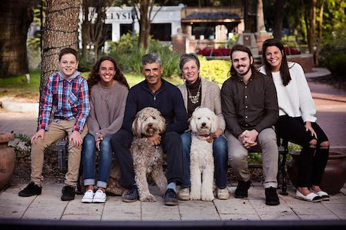

“One of the most fascinating things about golf is how it reflects the cycle of life. No matter what you shoot –
the next day you have to go back to the first tee and begin all over again and make yourself into something."
About Me
I was born in Colombia, South America. I attended B.Y.U on a golf scholarship and made all-American three of the four years I played college golf. I married a former Colombian women's amateur champion. Father of four kids, two boys, and two girls. Some of my favorite hobbies include reading and solo flying. I reside in Windermere, Florida

Amateur Achivements
Colobian junior champion 1980, 1981, and 1982
Junior world Runner-up
World Ameteur invididual Champion 1987
Three times All American division I
WAC player of the year 1987
Six College tornament victories
Professional Regular Tour Achivements
Ranked in the top 100 players in the world 1999
JGT (Japan Golf Tour) member 1988~2002
Six victories in the JGT
Member of the PGA Tour 2002
Member of the Nationwide Tour 2003~2009
Mexican Open Champion 1983
Winner of over 20 professional golf touernaments worldwide
World cup team participant 1994~1997
Three times Bristish Open participant
Professional Champions Tour Achivements
Two times Florida Senior Open Champion 2015, and 2017
Two times US Open Senior participant
Other Golf Achivements
First Colombian in the top 100 of the GWR
The Colombia National Junior Championship carries my name after the win in the World Amateur Championship in 1986